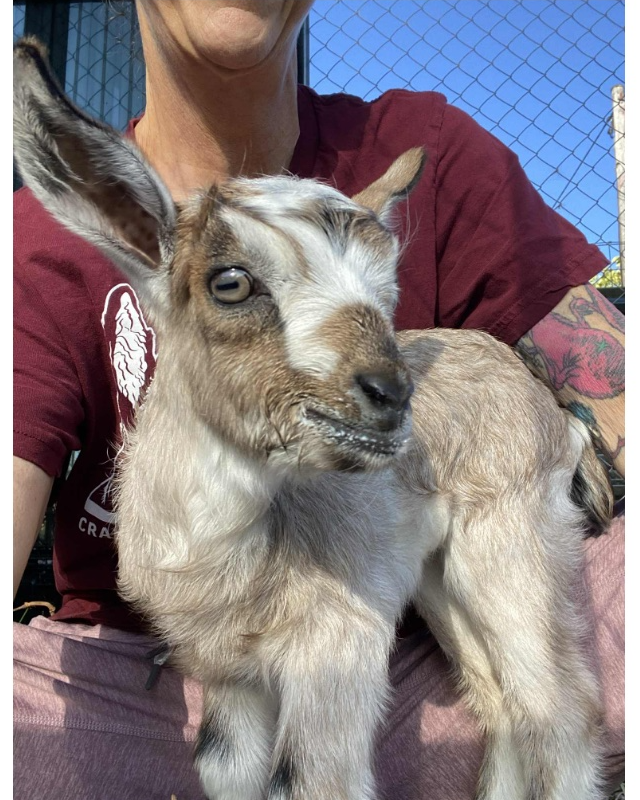
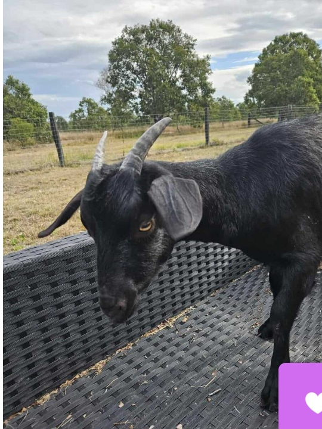
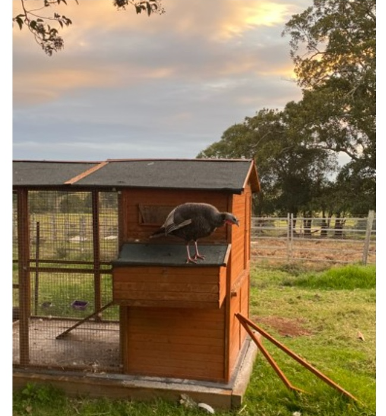
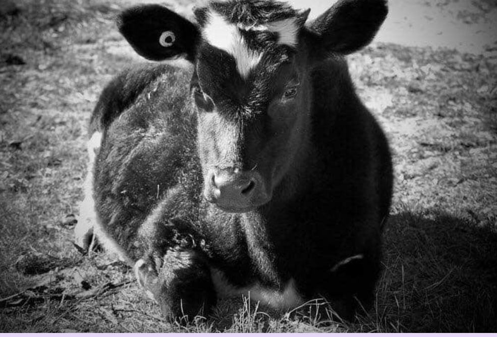

Treatment: the charity's own photos — warm, candid, eye-level with the animal. Rounded corners (--radius-md/lg), soft shadow. Reserve black & white for memorial / origin stories (e.g. Cranky). Avoid stock; faces and eyes carry the emotion.